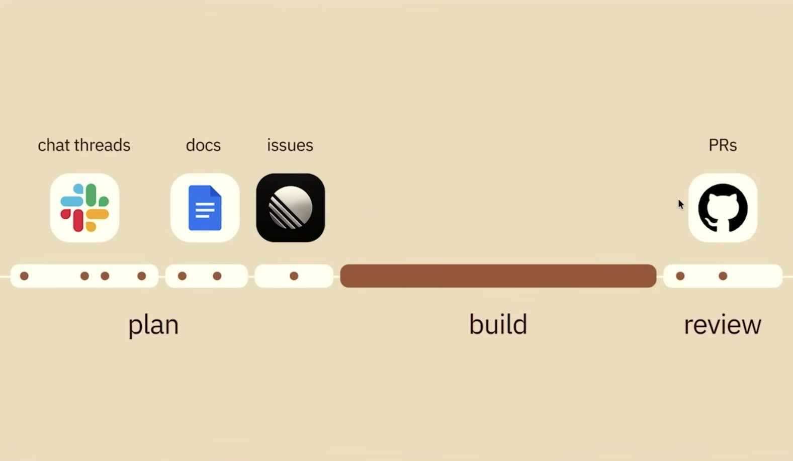
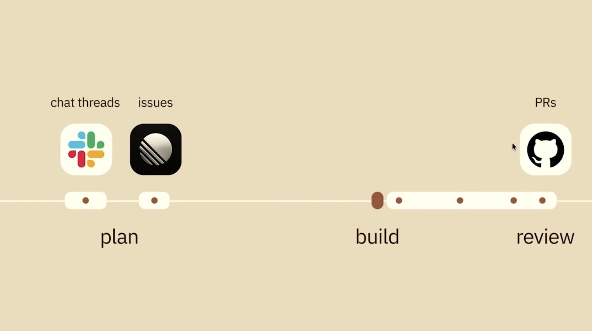

v Github researcher on how we should collaborate with agents in teams - 2026-04
https://youtu.be/ClWD8OEYgp8?si=KANa64gDIWizThAO
Summary
Coding agents are greatly speeding up individual developers, but team coding alignment is important and hard to arrive at. Implementation has gotten so fast that nobody wants to pre-plan upfront anymore, so alignment has been relegated to the review phase, which is late: you get duplicated and throw-away work. PRs are not the ideal interface to review both design and implementation, either.
Agreeing what do build is becoming a new bottleneck. Really, designing, planning, and coding need to be merged and be iterative. You need real-time collaborative editing of a shared artifact to support a group working together. So, group chat (with agents in the chat, too) and a micro VM that runs the artifact being worked on.
Implications
This will allow the review phase to be more limited. Perhaps it can then go back to being more of an engineering-focused activity where engineers work with agents to ensure that the non-functional requirements are supported by the code.
Notes
agent-generated artifact for human review -- video showing changes agent task -- change review app
At 2:00 agreeing what to build is becoming a new bottleneck
At 3:30 there was time for alignment

In the new version since the bill takes such a short amount of time people think that it's OK to shorten the amount of planning time, but then I've also noticed that reviewing agentic coding takes longer, and that's also where alignment is happening now

At 6:00 human context is not in the codebase. She gave a bunch of examples. She says that it needs to get into the code base.
At 7:15, when describing the UI she says "It looks a bit like Slack, Github, Copilot, and a bunch of cloud computers had a baby"
At 8:00 project - ace
At 11:25, the final PR points back to the ACE session. ... Like t Mitchell Hashimoto put his Amp threads in his pull requests
At 11:50 real-time collaborative editing of a shared artifact associated with the micro VM
At 14:30 a social information fabric that is available to ace to be able to generate for you because it has access to all of the context around how features were built because the sessions were done within ACE.
At 15:10, we have the opportunity to make much better software because we can spend we would be much more rigorous in our thinking and get better alignment early on ... AI can make software better and not just faster
At 15:50 quality is the new differentiator that will set you apart from vibe coding slop